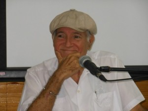
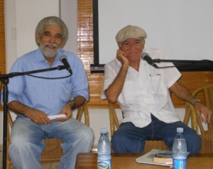

José Luis Moreno del Toro, poeta y médico, ha cumplido 70 años y la Asociación de Escritores de la UNEAC le ha homenajeado el pasado viernes 15 de noviembre en su tradicional encuentro Tardes de Poesía. Acompañado de amigos, admiradores y familiares, fue el momento ideal para estrenar en La Habana el documental Un nombre muy simple, de Idalberto Betancourt Cordero, dedicado a su vida y a su obra.
“Ni el poeta encontró al médico, ni el médico encontró al poeta. El poeta y el médico se encontraron en un cruce de caminos”, así empieza Moreno el documental, en el que confiesa haber tenido momentos de mucha felicidad en su vida: “La felicidad se escribe con letra grande, de molde… no es algo que se alcanza, sino algo a donde uno va”. En su poesía ha dicho sobre ella: “no es una estrella azul en el horizonte, sino el largo camino hacia ella”.
Al presentarle, el también poeta Alex Pausides –anfitrión de las Tardes de Poesía– elogió su honestidad, la forma directa en que transmite sus verdades, incluso aquellas que sean incómodas, es “un ser humano consecuente con sus ideas, campechano como un buen cubano”, todo lo cual lo hace “un hombre imprescindible, que se ha ganado un espacio en la intelectualidad cubana”.
Semanas atrás le celebraron su cumpleaños en su natal Holguín y el documental tuvo su estreno nacional. “Yo no he dejado Holguín”, confiesa Moreno: “vine a estudiar medicina en el año 1962… y vine a dominar, a descubrir, a tomar La Habana”. Aunque vive y continúa trabajando en la capital, ratifica: “Yo soy un hombre holguinero, no puedo producir más nada que no sea de Holguín… mi poesía es holguinera, mi cirugía es holguinera”.
Al hablar de su obra, expresó la sorpresa y el placer que siempre le causa la interpretación musical de sus poemas, entre los que se destaca Si yo fuera mayo, musicalizado por José Antonio Quesada y Martha Campos, con arreglo de Pepe Ordaz, que fuera interpretado por Sara González e incluso sirviera de título para uno de sus discos. “No tengo más que agradecerle a cada uno de los compositores y trovadores que hayan puesto música a mis versos”, indicó al referirse también a otros poemas como Ese lunar, musicalizado por el poeta chileno Patricio Navalón; Otras proposiciones para la muerte de otra Ana, musicalizado por el trovador holguinero Elito Abad; und Niña paseando un minotauro ciego, musicalizado por Augusto Blanca.

Mit 17 libros publicados y como única ambición “ser un hombre útil”, durante la lectura de algunos de sus poemas –viejos y nuevos– mostró una lírica comprometida con su tiempo, en los que se abordan de forma sincera y diáfana una variedad de temas por el que transcurren personajes de la infancia, el rudo trabajo de los operadores de hornos de cal, los amigos que ya no están, la ciudad, los temores y alegrías de los avatares de la vida, Familie, el amor…
“Yo escribo la poesía que puedo, no la que quiero”, sentenció, “si hubiera podido escribir la que quiero, hubiera escrito los Versos Sencillos”. Confesó que su primer gran orgullo en la vida fue, durante la adolescencia, haber sido brigadista Conrado Benítez en la Campaña de Alfabetización. “Hacerse maestro es hacerse creador”, dijo.
Poco tiempo después empezó a escribir, sin pensar en trascender, convencido de que la mejor recompensa que pueda tener un poeta es su público. “Escribir poesía es bastante. Buena, mala, regular… que sea el lector quien se comunique con ella”, sentenció.
José Luis Moreno del Toro nació el 25 Oktober 1943 y actualmente trabaja como profesor de cirugía general en el Hospital Universitario “General Calixto García”, además de presidir la Cátedra de Cultura Cubana de la Universidad Médica de La Habana.
Su obra poética ha sido publicada en Cuba y en el extranjero –traducida a varios idiomas– y sus éxitos literarios no se limitan a la poesía, pues su relato Flor de Pino (publicado en Nicaragua en 1984) fue llevado al cine por la cineasta Laura López, por el cual recibió premios internacionales en festivales de cine y televisión.
Le han sido otorgadas varias condecoraciones, entre las que se destacan: la Distinción por la Cultura Nacional (1993), el Hacha de Holguín (1993), el Escudo de la ciudad de Gibara (1995), Ciudadano Honorífico de Colombia (1997), Hijo Destacado e Hijo Ilustre de la ciudad de Holguín (2001 und 2009 respectivamente), la medalla Fundación del Grupo “Teatro Estudio”, u.a..
Al reflexionar sobre una vida y una obra tan intensa, en estos 70 Jahre, Moreno aconseja “no perder ese niño o niña que llevamos dentro, no perder la inocencia”. Pero, sobre todo, “no perder la felicidad de la inocencia”.

Von: Camilo García Lopez-trigo